KNN Regression Data (NO2 Semarang)#
K-Nearest Neighbors (KNN) Regression adalah salah satu metode dalam machine learning yang melakukan prediksi berdasarkan kedekatan data baru dengan beberapa data historis yang mirip. Pada proses prediksi, algoritma akan mencari K data terdekat (nearest neighbors) lalu menghitung rata-rata dari nilai target pada tetangga tersebut sebagai hasil prediksi.
Dalam konteks kasus prediksi NO₂, nilai lag (misalnya NO₂ dua hari sebelumnya hingga lima hari sebelumnya) digunakan sebagai fitur yang menggambarkan kondisi historis. KNN kemudian akan mencari periode di masa lalu yang memiliki pola lag yang mirip, lalu memprediksi kadar NO₂ besok dengan mengambil rata-rata kadar NO₂ yang terjadi pada periode-periode yang mirip tersebut.
Mengapa R-Squared dan MSE Rendah pada Eksperimen?#
R-Squared yang rendah menunjukkan bahwa variasi kadar NO₂ besok tidak cukup dapat dijelaskan hanya dengan data lag 2–5 hari sebelumnya. Hal ini masuk akal karena variabel lingkungan yang sangat memengaruhi kadar NO₂ tidak dimasukkan sebagai fitur dalam model. Dengan demikian, KNN hanya “menebak” dari pola serupa di masa lalu menggunakan informasi yang sangat terbatas.
Modeling Data NO2 Semarang#
Dalam modeling ini dibuat sesuai dengan eksperiment data supervised yaitu dengan data yang menggunakan 2 hari sebelumnya hingga 5 hari, dalam modeling ini juga di bedakan antara modeling untuk Single Forecasting dan Multi-step Forecasting
Import Library#
import numpy as np
import pandas as pd
import matplotlib.pyplot as plt
from sklearn.preprocessing import StandardScaler, MinMaxScaler
from sklearn.datasets import make_regression
from sklearn.model_selection import train_test_split
from sklearn.ensemble import RandomForestRegressor
from sklearn.neighbors import KNeighborsRegressor
from sklearn.metrics import r2_score, mean_squared_error, mean_absolute_percentage_error
A module that was compiled using NumPy 1.x cannot be run in
NumPy 2.0.2 as it may crash. To support both 1.x and 2.x
versions of NumPy, modules must be compiled with NumPy 2.0.
Some module may need to rebuild instead e.g. with 'pybind11>=2.12'.
If you are a user of the module, the easiest solution will be to
downgrade to 'numpy<2' or try to upgrade the affected module.
We expect that some modules will need time to support NumPy 2.
Traceback (most recent call last): File "C:\Users\USERB-PC\AppData\Local\Programs\Python\Python39\lib\runpy.py", line 197, in _run_module_as_main
return _run_code(code, main_globals, None,
File "C:\Users\USERB-PC\AppData\Local\Programs\Python\Python39\lib\runpy.py", line 87, in _run_code
exec(code, run_globals)
File "C:\Users\USERB-PC\AppData\Roaming\Python\Python39\site-packages\ipykernel_launcher.py", line 18, in <module>
app.launch_new_instance()
File "C:\Users\USERB-PC\AppData\Local\Programs\Python\Python39\lib\site-packages\traitlets\config\application.py", line 1075, in launch_instance
app.start()
File "C:\Users\USERB-PC\AppData\Roaming\Python\Python39\site-packages\ipykernel\kernelapp.py", line 739, in start
self.io_loop.start()
File "C:\Users\USERB-PC\AppData\Local\Programs\Python\Python39\lib\site-packages\tornado\platform\asyncio.py", line 211, in start
self.asyncio_loop.run_forever()
File "C:\Users\USERB-PC\AppData\Local\Programs\Python\Python39\lib\asyncio\base_events.py", line 596, in run_forever
self._run_once()
File "C:\Users\USERB-PC\AppData\Local\Programs\Python\Python39\lib\asyncio\base_events.py", line 1890, in _run_once
handle._run()
File "C:\Users\USERB-PC\AppData\Local\Programs\Python\Python39\lib\asyncio\events.py", line 80, in _run
self._context.run(self._callback, *self._args)
File "C:\Users\USERB-PC\AppData\Roaming\Python\Python39\site-packages\ipykernel\kernelbase.py", line 545, in dispatch_queue
await self.process_one()
File "C:\Users\USERB-PC\AppData\Roaming\Python\Python39\site-packages\ipykernel\kernelbase.py", line 534, in process_one
await dispatch(*args)
File "C:\Users\USERB-PC\AppData\Roaming\Python\Python39\site-packages\ipykernel\kernelbase.py", line 437, in dispatch_shell
await result
File "C:\Users\USERB-PC\AppData\Roaming\Python\Python39\site-packages\ipykernel\ipkernel.py", line 362, in execute_request
await super().execute_request(stream, ident, parent)
File "C:\Users\USERB-PC\AppData\Roaming\Python\Python39\site-packages\ipykernel\kernelbase.py", line 778, in execute_request
reply_content = await reply_content
File "C:\Users\USERB-PC\AppData\Roaming\Python\Python39\site-packages\ipykernel\ipkernel.py", line 449, in do_execute
res = shell.run_cell(
File "C:\Users\USERB-PC\AppData\Roaming\Python\Python39\site-packages\ipykernel\zmqshell.py", line 549, in run_cell
return super().run_cell(*args, **kwargs)
File "C:\Users\USERB-PC\AppData\Local\Programs\Python\Python39\lib\site-packages\IPython\core\interactiveshell.py", line 3048, in run_cell
result = self._run_cell(
File "C:\Users\USERB-PC\AppData\Local\Programs\Python\Python39\lib\site-packages\IPython\core\interactiveshell.py", line 3103, in _run_cell
result = runner(coro)
File "C:\Users\USERB-PC\AppData\Local\Programs\Python\Python39\lib\site-packages\IPython\core\async_helpers.py", line 129, in _pseudo_sync_runner
coro.send(None)
File "C:\Users\USERB-PC\AppData\Local\Programs\Python\Python39\lib\site-packages\IPython\core\interactiveshell.py", line 3308, in run_cell_async
has_raised = await self.run_ast_nodes(code_ast.body, cell_name,
File "C:\Users\USERB-PC\AppData\Local\Programs\Python\Python39\lib\site-packages\IPython\core\interactiveshell.py", line 3490, in run_ast_nodes
if await self.run_code(code, result, async_=asy):
File "C:\Users\USERB-PC\AppData\Local\Programs\Python\Python39\lib\site-packages\IPython\core\interactiveshell.py", line 3550, in run_code
exec(code_obj, self.user_global_ns, self.user_ns)
File "C:\Users\USERB-PC\AppData\Local\Temp\ipykernel_3132\877238275.py", line 3, in <module>
import matplotlib.pyplot as plt
File "C:\Users\USERB-PC\AppData\Local\Programs\Python\Python39\lib\site-packages\matplotlib\__init__.py", line 158, in <module>
from . import _api, _version, cbook, _docstring, rcsetup
File "C:\Users\USERB-PC\AppData\Local\Programs\Python\Python39\lib\site-packages\matplotlib\rcsetup.py", line 27, in <module>
from matplotlib.colors import Colormap, is_color_like
File "C:\Users\USERB-PC\AppData\Local\Programs\Python\Python39\lib\site-packages\matplotlib\colors.py", line 56, in <module>
from matplotlib import _api, _cm, cbook, scale
File "C:\Users\USERB-PC\AppData\Local\Programs\Python\Python39\lib\site-packages\matplotlib\scale.py", line 22, in <module>
from matplotlib.ticker import (
File "C:\Users\USERB-PC\AppData\Local\Programs\Python\Python39\lib\site-packages\matplotlib\ticker.py", line 138, in <module>
from matplotlib import transforms as mtransforms
File "C:\Users\USERB-PC\AppData\Local\Programs\Python\Python39\lib\site-packages\matplotlib\transforms.py", line 49, in <module>
from matplotlib._path import (
---------------------------------------------------------------------------
AttributeError Traceback (most recent call last)
AttributeError: _ARRAY_API not found
---------------------------------------------------------------------------
ImportError Traceback (most recent call last)
Cell In[1], line 3
1 import numpy as np
2 import pandas as pd
----> 3 import matplotlib.pyplot as plt
4 from sklearn.preprocessing import StandardScaler, MinMaxScaler
5 from sklearn.datasets import make_regression
File ~\AppData\Local\Programs\Python\Python39\lib\site-packages\matplotlib\__init__.py:158
154 from packaging.version import parse as parse_version
156 # cbook must import matplotlib only within function
157 # definitions, so it is safe to import from it here.
--> 158 from . import _api, _version, cbook, _docstring, rcsetup
159 from matplotlib.cbook import sanitize_sequence
160 from matplotlib._api import MatplotlibDeprecationWarning
File ~\AppData\Local\Programs\Python\Python39\lib\site-packages\matplotlib\rcsetup.py:27
25 from matplotlib import _api, cbook
26 from matplotlib.cbook import ls_mapper
---> 27 from matplotlib.colors import Colormap, is_color_like
28 from matplotlib._fontconfig_pattern import parse_fontconfig_pattern
29 from matplotlib._enums import JoinStyle, CapStyle
File ~\AppData\Local\Programs\Python\Python39\lib\site-packages\matplotlib\colors.py:56
54 import matplotlib as mpl
55 import numpy as np
---> 56 from matplotlib import _api, _cm, cbook, scale
57 from ._color_data import BASE_COLORS, TABLEAU_COLORS, CSS4_COLORS, XKCD_COLORS
60 class _ColorMapping(dict):
File ~\AppData\Local\Programs\Python\Python39\lib\site-packages\matplotlib\scale.py:22
20 import matplotlib as mpl
21 from matplotlib import _api, _docstring
---> 22 from matplotlib.ticker import (
23 NullFormatter, ScalarFormatter, LogFormatterSciNotation, LogitFormatter,
24 NullLocator, LogLocator, AutoLocator, AutoMinorLocator,
25 SymmetricalLogLocator, AsinhLocator, LogitLocator)
26 from matplotlib.transforms import Transform, IdentityTransform
29 class ScaleBase:
File ~\AppData\Local\Programs\Python\Python39\lib\site-packages\matplotlib\ticker.py:138
136 import matplotlib as mpl
137 from matplotlib import _api, cbook
--> 138 from matplotlib import transforms as mtransforms
140 _log = logging.getLogger(__name__)
142 __all__ = ('TickHelper', 'Formatter', 'FixedFormatter',
143 'NullFormatter', 'FuncFormatter', 'FormatStrFormatter',
144 'StrMethodFormatter', 'ScalarFormatter', 'LogFormatter',
(...)
150 'MultipleLocator', 'MaxNLocator', 'AutoMinorLocator',
151 'SymmetricalLogLocator', 'AsinhLocator', 'LogitLocator')
File ~\AppData\Local\Programs\Python\Python39\lib\site-packages\matplotlib\transforms.py:49
46 from numpy.linalg import inv
48 from matplotlib import _api
---> 49 from matplotlib._path import (
50 affine_transform, count_bboxes_overlapping_bbox, update_path_extents)
51 from .path import Path
53 DEBUG = False
ImportError: numpy.core.multiarray failed to import
Membaca Dokumen#
day1 = pd.read_csv('../data/data-copernicus/day1.csv')
day2 = pd.read_csv('../data/data-copernicus/day2.csv')
day3 = pd.read_csv('../data/data-copernicus/day3.csv')
day4 = pd.read_csv('../data/data-copernicus/day4.csv')
day5 = pd.read_csv('../data/data-copernicus/day5.csv')
Membaca Dokumen (Multi-step Forecasting)#
day2_multi = pd.read_csv('model_normal/day2_multi.csv')
day3_multi = pd.read_csv('model_normal/day3_multi.csv')
day4_multi = pd.read_csv('model_normal/day4_multi.csv')
day5_multi = pd.read_csv('model_normal/day5_multi.csv')
day5_multi_new = pd.read_csv('model_normal/day5_multi_new.csv')
Modeling Data t1, t2#
X = day2.drop(columns=['NO2'])
y = day2['NO2']
X_train, X_test, y_train, y_test = train_test_split(X, y, test_size=0.2, random_state=42)
scaler = MinMaxScaler()
X_train_scaled = scaler.fit_transform(X_train)
X_test_scaled = scaler.transform(X_test)
knn = KNeighborsRegressor(n_neighbors=5)
knn.fit(X_train_scaled, y_train)
day2_predict = knn.predict(X_test_scaled)
r2_day2 = r2_score(y_test, day2_predict)
mse_day2 = mean_squared_error(y_test, day2_predict)
mape_day2 = mean_absolute_percentage_error(y_test, day2_predict)
print("MAPE: {:.2f}%".format(mape_day2 * 100))
print("MSE:", mse_day2)
print("R2:", r2_day2)
MAPE: 20.57%
MSE: 1.188933744920113e-10
R2: 0.4041259545763709
plt.figure(figsize=(10,5))
plt.plot(y_test.values, label="Aktual (NO2)", marker='o')
plt.plot(day2_predict, label="Prediksi (NO2)", marker='x')
plt.title("Perbandingan Nilai Aktual vs Prediksi (KNN Day2)")
plt.xlabel("Index Data Uji")
plt.ylabel("Nilai NO2")
plt.legend()
plt.grid(True)
plt.tight_layout()
plt.show()
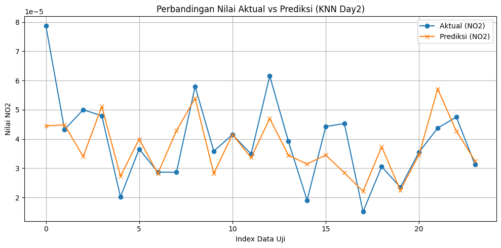
Modeling Data Multi-step Forecasting t1, t2#
X = day2_multi[['t1', 't2']]
y = day2_multi[['NO2_t+1', 'NO2_t+2']]
X_train, X_test, y_train, y_test = train_test_split(
X, y, test_size=0.2, random_state=42
)
scaler = MinMaxScaler()
X_train_scaled = scaler.fit_transform(X_train)
X_test_scaled = scaler.transform(X_test)
knn = KNeighborsRegressor(n_neighbors=6)
knn.fit(X_train_scaled, y_train)
day2_predict = knn.predict(X_test_scaled)
r2_day2 = r2_score(y_test, day2_predict)
mse_day2 = mean_squared_error(y_test, day2_predict)
mape_day2_multi = mean_absolute_percentage_error(y_test, day2_predict)
print("MAPE: {:.2f}%".format(mape_day2 * 100))
print("MSE:", mse_day2)
print("R2:", r2_day2)
result = pd.DataFrame(day2_predict, columns=['Pred_NO2_t+1', 'Pred_NO2_t+2'])
result['Actual_NO2_t+1'] = y_test['NO2_t+1'].values
result['Actual_NO2_t+2'] = y_test['NO2_t+2'].values
result.head()
MAPE: 20.57%
MSE: 1.2338818383031345e-10
R2: 0.217905152219647
| Pred_NO2_t+1 | Pred_NO2_t+2 | Actual_NO2_t+1 | Actual_NO2_t+2 | |
|---|---|---|---|---|
| 0 | 0.000051 | 0.000046 | 0.000052 | 0.000040 |
| 1 | 0.000036 | 0.000042 | 0.000032 | 0.000044 |
| 2 | 0.000038 | 0.000049 | 0.000061 | 0.000071 |
| 3 | 0.000050 | 0.000043 | 0.000034 | 0.000043 |
| 4 | 0.000029 | 0.000034 | 0.000021 | 0.000022 |
# Buat figure
plt.figure(figsize=(12, 5))
# Grafik 1: Prediksi t+1
plt.subplot(1, 2, 1)
plt.plot(result['Actual_NO2_t+1'].values, label='Actual t+1', marker='o')
plt.plot(result['Pred_NO2_t+1'].values, label='Predicted t+1', marker='x')
plt.title('Prediksi NO2 untuk Hari t+1')
plt.xlabel('Sampel')
plt.ylabel('NO2')
plt.legend()
plt.grid(True)
# Grafik 2: Prediksi t+2
plt.subplot(1, 2, 2)
plt.plot(result['Actual_NO2_t+2'].values, label='Actual t+2', marker='o')
plt.plot(result['Pred_NO2_t+2'].values, label='Predicted t+2', marker='x')
plt.title('Prediksi NO2 untuk Hari t+2')
plt.xlabel('Sampel')
plt.ylabel('NO2')
plt.legend()
plt.grid(True)
plt.tight_layout()
plt.show()
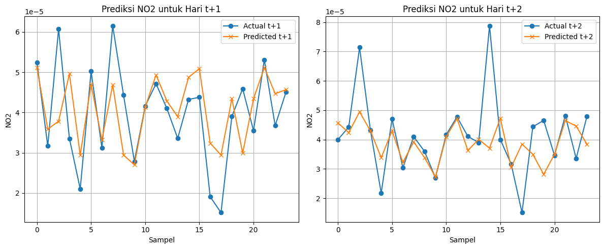
Modeling Data t1, t2, t3#
X = day3.drop(columns=['NO2'])
y = day3['NO2']
X_train, X_test, y_train, y_test = train_test_split(X, y, test_size=0.2, random_state=42)
scaler = MinMaxScaler()
X_train_scaled = scaler.fit_transform(X_train)
X_test_scaled = scaler.transform(X_test)
knn = KNeighborsRegressor(n_neighbors=6)
knn.fit(X_train_scaled, y_train)
day3_predict = knn.predict(X_test_scaled)
r2_day3 = r2_score(y_test, day3_predict)
mse_day3 = mean_squared_error(y_test, day3_predict)
mape_day3 = mean_absolute_percentage_error(y_test, day3_predict)
print("MAPE: {:.2f}%".format(mape_day3 * 100))
print("MSE:", mse_day3)
print("R2:", r2_day3)
MAPE: 18.10%
MSE: 6.433889884475998e-11
R2: 0.5274650856138315
plt.figure(figsize=(10,5))
plt.plot(y_test.values, label="Aktual (NO2)", marker='o')
plt.plot(day3_predict, label="Prediksi (NO2)", marker='x')
plt.title("Perbandingan Nilai Aktual vs Prediksi (KNN Day2)")
plt.xlabel("Index Data Uji")
plt.ylabel("Nilai NO2")
plt.legend()
plt.grid(True)
plt.tight_layout()
plt.show()
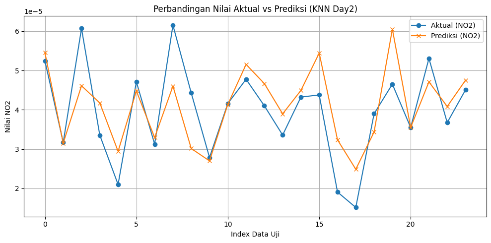
Modeling Data Multi-step Forecasting t1, t2, t3#
X = day3_multi[['t1', 't2', 't3']]
y = day3_multi[['NO2_t+1', 'NO2_t+2']]
X_train, X_test, y_train, y_test = train_test_split(
X, y, test_size=0.2, random_state=42
)
scaler = MinMaxScaler()
X_train_scaled = scaler.fit_transform(X_train)
X_test_scaled = scaler.transform(X_test)
knn = KNeighborsRegressor(n_neighbors=6)
knn.fit(X_train_scaled, y_train)
day3_predict = knn.predict(X_test_scaled)
r2_day3 = r2_score(y_test, day3_predict)
mse_day3 = mean_squared_error(y_test, day3_predict)
mape_day3_multi = mean_absolute_percentage_error(y_test, day3_predict)
print("MAPE: {:.2f}%".format(mape_day3 * 100))
print("MSE:", mse_day3)
print("R2:", r2_day3)
result = pd.DataFrame(day3_predict, columns=['Pred_NO2_t+1', 'Pred_NO2_t+2'])
result['Actual_NO2_t+1'] = y_test['NO2_t+1'].values
result['Actual_NO2_t+2'] = y_test['NO2_t+2'].values
result.head()
MAPE: 18.10%
MSE: 1.9061168383302914e-10
R2: 0.008788579815451558
| Pred_NO2_t+1 | Pred_NO2_t+2 | Actual_NO2_t+1 | Actual_NO2_t+2 | |
|---|---|---|---|---|
| 0 | 0.000050 | 0.000043 | 0.000034 | 0.000043 |
| 1 | 0.000053 | 0.000045 | 0.000071 | 0.000082 |
| 2 | 0.000038 | 0.000036 | 0.000048 | 0.000065 |
| 3 | 0.000041 | 0.000040 | 0.000079 | 0.000044 |
| 4 | 0.000040 | 0.000037 | 0.000041 | 0.000041 |
# Buat figure
plt.figure(figsize=(12, 5))
# Grafik 1: Prediksi t+1
plt.subplot(1, 2, 1)
plt.plot(result['Actual_NO2_t+1'].values, label='Actual t+1', marker='o')
plt.plot(result['Pred_NO2_t+1'].values, label='Predicted t+1', marker='x')
plt.title('Prediksi NO2 untuk Hari t+1')
plt.xlabel('Sampel')
plt.ylabel('NO2')
plt.legend()
plt.grid(True)
# Grafik 2: Prediksi t+2
plt.subplot(1, 2, 2)
plt.plot(result['Actual_NO2_t+2'].values, label='Actual t+2', marker='o')
plt.plot(result['Pred_NO2_t+2'].values, label='Predicted t+2', marker='x')
plt.title('Prediksi NO2 untuk Hari t+2')
plt.xlabel('Sampel')
plt.ylabel('NO2')
plt.legend()
plt.grid(True)
plt.tight_layout()
plt.show()
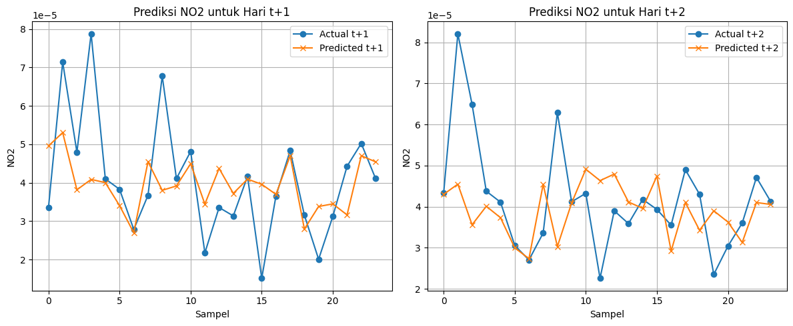
Modeling Data t1, t2, t3, t4#
X = day4.drop(columns=['NO2'])
y = day4['NO2']
X_train, X_test, y_train, y_test = train_test_split(X, y, test_size=0.2, random_state=42)
scaler = MinMaxScaler()
X_train_scaled = scaler.fit_transform(X_train)
X_test_scaled = scaler.transform(X_test)
knn = KNeighborsRegressor(n_neighbors=5)
knn.fit(X_train_scaled, y_train)
day4_predict = knn.predict(X_test_scaled)
r2_day4 = r2_score(y_test, day4_predict)
mse_day4 = mean_squared_error(y_test, day4_predict)
mape_day4 = mean_absolute_percentage_error(y_test, day4_predict)
print("MAPE: {:.2f}%".format(mape_day4 * 100))
print("MSE:", mse_day4)
print("R2:", r2_day4)
MAPE: 20.26%
MSE: 1.636020840797285e-10
R2: 0.05386850429585299
plt.figure(figsize=(10,5))
plt.plot(y_test.values, label="Aktual (NO2)", marker='o')
plt.plot(day4_predict, label="Prediksi (NO2)", marker='x')
plt.title("Perbandingan Nilai Aktual vs Prediksi (KNN Day2)")
plt.xlabel("Index Data Uji")
plt.ylabel("Nilai NO2")
plt.legend()
plt.grid(True)
plt.tight_layout()
plt.show()
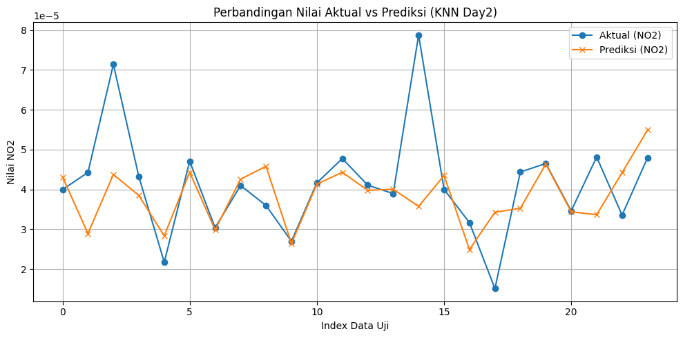
Modeling Data Multi-step Forecasting t1, t2, t3, t4#
X = day4_multi[['t1', 't2', 't3', 't4']]
y = day4_multi[['NO2_t+1', 'NO2_t+2']]
X_train, X_test, y_train, y_test = train_test_split(
X, y, test_size=0.2, random_state=42
)
scaler = MinMaxScaler()
X_train_scaled = scaler.fit_transform(X_train)
X_test_scaled = scaler.transform(X_test)
knn = KNeighborsRegressor(n_neighbors=3)
knn.fit(X_train_scaled, y_train)
day4_predict = knn.predict(X_test_scaled)
r2_day4 = r2_score(y_test, day4_predict)
mse_day4 = mean_squared_error(y_test, day4_predict)
mape_day4_multi = mean_absolute_percentage_error(y_test, day4_predict)
print("MAPE: {:.2f}%".format(mape_day4 * 100))
print("MSE:", mse_day4)
print("R2:", r2_day4)
result = pd.DataFrame(day4_predict, columns=['Pred_NO2_t+1', 'Pred_NO2_t+2'])
result['Actual_NO2_t+1'] = y_test['NO2_t+1'].values
result['Actual_NO2_t+2'] = y_test['NO2_t+2'].values
result.head()
MAPE: 20.26%
MSE: 1.925452812901887e-10
R2: -0.12364624252547529
| Pred_NO2_t+1 | Pred_NO2_t+2 | Actual_NO2_t+1 | Actual_NO2_t+2 | |
|---|---|---|---|---|
| 0 | 0.000031 | 0.000028 | 0.000038 | 0.000038 |
| 1 | 0.000039 | 0.000038 | 0.000082 | 0.000064 |
| 2 | 0.000050 | 0.000040 | 0.000044 | 0.000034 |
| 3 | 0.000054 | 0.000040 | 0.000043 | 0.000079 |
| 4 | 0.000036 | 0.000043 | 0.000041 | 0.000041 |
# Buat figure
plt.figure(figsize=(12, 5))
# Grafik 1: Prediksi t+1
plt.subplot(1, 2, 1)
plt.plot(result['Actual_NO2_t+1'].values, label='Actual t+1', marker='o')
plt.plot(result['Pred_NO2_t+1'].values, label='Predicted t+1', marker='x')
plt.title('Prediksi NO2 untuk Hari t+1')
plt.xlabel('Sampel')
plt.ylabel('NO2')
plt.legend()
plt.grid(True)
# Grafik 2: Prediksi t+2
plt.subplot(1, 2, 2)
plt.plot(result['Actual_NO2_t+2'].values, label='Actual t+2', marker='o')
plt.plot(result['Pred_NO2_t+2'].values, label='Predicted t+2', marker='x')
plt.title('Prediksi NO2 untuk Hari t+2')
plt.xlabel('Sampel')
plt.ylabel('NO2')
plt.legend()
plt.grid(True)
plt.tight_layout()
plt.show()
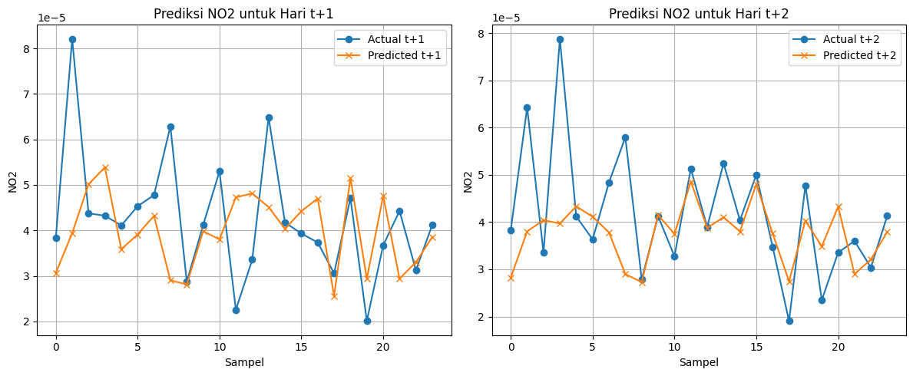
Modeling Data t1, t2, t3, t4, t5#
X = day5.drop(columns=['NO2'])
y = day5['NO2']
X_train, X_test, y_train, y_test = train_test_split(X, y, test_size=0.2, random_state=42)
scaler = MinMaxScaler()
X_train_scaled = scaler.fit_transform(X_train)
X_test_scaled = scaler.transform(X_test)
knn = KNeighborsRegressor(n_neighbors=14)
knn.fit(X_train_scaled, y_train)
day5_predict = knn.predict(X_test_scaled)
r2_day5 = r2_score(y_test, day5_predict)
mse_day5 = mean_squared_error(y_test, day5_predict)
mape_day5 = mean_absolute_percentage_error(y_test, day5_predict)
print("MAPE: {:.2f}%".format(mape_day5 * 100))
print("MSE:", mse_day5)
print("R2:", r2_day5)
MAPE: 14.85%
MSE: 1.0311452662792994e-10
R2: 0.3907964342150523
plt.figure(figsize=(10,5))
plt.plot(y_test.values, label="Aktual (NO2)", marker='o')
plt.plot(day5_predict, label="Prediksi (NO2)", marker='x')
plt.title("Perbandingan Nilai Aktual vs Prediksi (KNN Day2)")
plt.xlabel("Index Data Uji")
plt.ylabel("Nilai NO2")
plt.legend()
plt.grid(True)
plt.tight_layout()
plt.show()
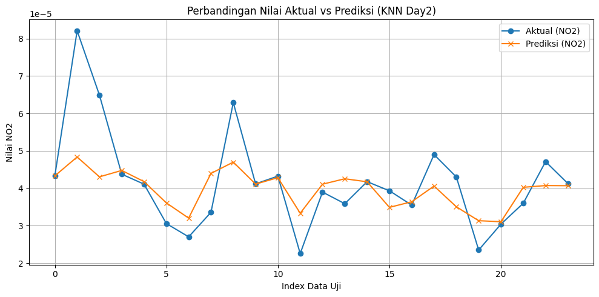
Modeling Data Multi-step Forecasting t1, t2, t3, t4, t5#
X = day5_multi[['t1', 't2', 't3', 't4', 't5']]
y = day5_multi[['NO2_t+1', 'NO2_t+2']]
X_train, X_test, y_train, y_test = train_test_split(
X, y, test_size=0.2, random_state=42
)
scaler = MinMaxScaler()
X_train_scaled = scaler.fit_transform(X_train)
X_test_scaled = scaler.transform(X_test)
knn = KNeighborsRegressor(n_neighbors=4)
knn.fit(X_train_scaled, y_train)
day5_predict = knn.predict(X_test_scaled)
r2_day5 = r2_score(y_test, day5_predict)
mse_day5 = mean_squared_error(y_test, day5_predict)
mape_day5_multi = mean_absolute_percentage_error(y_test, day5_predict)
print("MAPE: {:.2f}%".format(mape_day5 * 100))
print("MSE:", mse_day5)
print("R2:", r2_day5)
result = pd.DataFrame(day5_predict, columns=['Pred_NO2_t+1', 'Pred_NO2_t+2'])
result['Actual_NO2_t+1'] = y_test['NO2_t+1'].values
result['Actual_NO2_t+2'] = y_test['NO2_t+2'].values
result.head()
MAPE: 14.85%
MSE: 7.917259650803388e-11
R2: 0.42603492256705594
| Pred_NO2_t+1 | Pred_NO2_t+2 | Actual_NO2_t+1 | Actual_NO2_t+2 | |
|---|---|---|---|---|
| 0 | 0.000042 | 0.000038 | 0.000038 | 0.000038 |
| 1 | 0.000046 | 0.000044 | 0.000064 | 0.000046 |
| 2 | 0.000045 | 0.000047 | 0.000079 | 0.000044 |
| 3 | 0.000027 | 0.000029 | 0.000029 | 0.000028 |
| 4 | 0.000042 | 0.000042 | 0.000041 | 0.000041 |
# Buat figure
plt.figure(figsize=(12, 5))
# Grafik 1: Prediksi t+1
plt.subplot(1, 2, 1)
plt.plot(result['Actual_NO2_t+1'].values, label='Actual t+1', marker='o')
plt.plot(result['Pred_NO2_t+1'].values, label='Predicted t+1', marker='x')
plt.title('Prediksi NO2 untuk Hari t+1')
plt.xlabel('Sampel')
plt.ylabel('NO2')
plt.legend()
plt.grid(True)
# Grafik 2: Prediksi t+2
plt.subplot(1, 2, 2)
plt.plot(result['Actual_NO2_t+2'].values, label='Actual t+2', marker='o')
plt.plot(result['Pred_NO2_t+2'].values, label='Predicted t+2', marker='x')
plt.title('Prediksi NO2 untuk Hari t+2')
plt.xlabel('Sampel')
plt.ylabel('NO2')
plt.legend()
plt.grid(True)
plt.tight_layout()
plt.show()
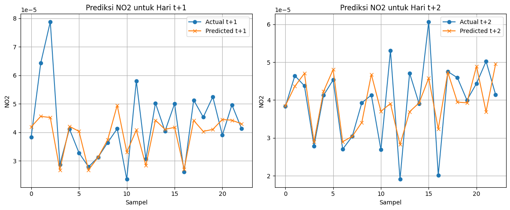
import pickle
# simpan model
with open("../Aplikasi/Aplikasi Prediksi NO2/model/model_knn_day5.pkl", "wb") as f:
pickle.dump(knn, f)
# simpan normalisasi
with open("../Aplikasi/Aplikasi Prediksi NO2/model/scaler_day5.pkl", "wb") as f:
pickle.dump(scaler, f)
X = day5_multi_new[['t1', 't2', 't3', 't4', 't5']]
y = day5_multi_new[['NO2_t+1', 'NO2_t+2']]
X_train, X_test, y_train, y_test = train_test_split(
X, y, test_size=0.2, random_state=42
)
scaler = MinMaxScaler()
X_train_scaled = scaler.fit_transform(X_train)
X_test_scaled = scaler.transform(X_test)
knn = KNeighborsRegressor(n_neighbors=4)
knn.fit(X_train_scaled, y_train)
day5_predict = knn.predict(X_test_scaled)
r2_day5 = r2_score(y_test, day5_predict)
mse_day5 = mean_squared_error(y_test, day5_predict)
mape_day5_multi = mean_absolute_percentage_error(y_test, day5_predict)
print("MAPE: {:.2f}%".format(mape_day5_multi * 100))
print("MSE:", mse_day5)
print("R2:", r2_day5)
result = pd.DataFrame(day5_predict, columns=['Pred_NO2_t+1', 'Pred_NO2_t+2'])
result['Actual_NO2_t+1'] = y_test['NO2_t+1'].values
result['Actual_NO2_t+2'] = y_test['NO2_t+2'].values
result.head()
MAPE: 27.38%
MSE: 1.2216530658804411e-10
R2: 0.10275429869930225
| Pred_NO2_t+1 | Pred_NO2_t+2 | Actual_NO2_t+1 | Actual_NO2_t+2 | |
|---|---|---|---|---|
| 0 | 0.000042 | 0.000040 | 0.000023 | 0.000045 |
| 1 | 0.000046 | 0.000043 | 0.000050 | 0.000061 |
| 2 | 0.000038 | 0.000034 | 0.000044 | 0.000034 |
| 3 | 0.000044 | 0.000048 | 0.000033 | 0.000039 |
| 4 | 0.000040 | 0.000036 | 0.000019 | 0.000020 |
# Buat figure
plt.figure(figsize=(12, 5))
# Grafik 1: Prediksi t+1
plt.subplot(1, 2, 1)
plt.plot(result['Actual_NO2_t+1'].values, label='Actual t+1', marker='o')
plt.plot(result['Pred_NO2_t+1'].values, label='Predicted t+1', marker='x')
plt.title('Prediksi NO2 untuk Hari t+1')
plt.xlabel('Sampel')
plt.ylabel('NO2')
plt.legend()
plt.grid(True)
# Grafik 2: Prediksi t+2
plt.subplot(1, 2, 2)
plt.plot(result['Actual_NO2_t+2'].values, label='Actual t+2', marker='o')
plt.plot(result['Pred_NO2_t+2'].values, label='Predicted t+2', marker='x')
plt.title('Prediksi NO2 untuk Hari t+2')
plt.xlabel('Sampel')
plt.ylabel('NO2')
plt.legend()
plt.grid(True)
plt.tight_layout()
plt.show()
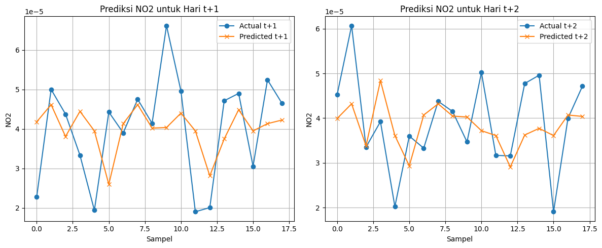
Perbandingan MAPE Single Forcasting Berdasarkan Banyak Lag Hari yang digunakan#
x = ['lag 2', 'lag 3', '4 Hari', '5 Hari']
y = [mape_day2, mape_day3, mape_day4, mape_day5]
y_percent = [v * 100 for v in y]
fig, ax = plt.subplots(figsize=(8, 7))
bars = ax.bar(x, y_percent)
ax.set_title("Perbandingan Nilai MAPE Single Forecasting berdasarkan Jumlah Lag Hari Sebelumnya")
ax.set_xlabel("Lag")
ax.set_ylabel("Nilai MAPE")
ax.bar_label(bars, fmt='%.2f%%', padding=3)
plt.tight_layout()
plt.show()
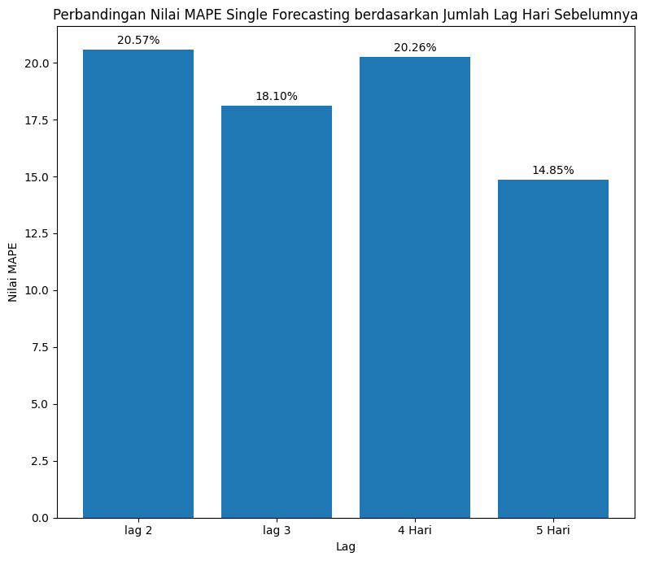
Perbandingan MAPE Multi Forcasting Berdasarkan Banyak Lag Hari yang digunakan#
x = ['lag 2', 'lag 3', '4 Hari', '5 Hari']
y = [mape_day2_multi, mape_day3_multi, mape_day4_multi, mape_day5_multi]
y_percent = [v * 100 for v in y]
fig, ax = plt.subplots(figsize=(8, 7))
bars = ax.bar(x, y_percent)
ax.set_title("Perbandingan Nilai MAPE Single Forecasting berdasarkan Jumlah Lag Hari Sebelumnya")
ax.set_xlabel("Lag")
ax.set_ylabel("Nilai MAPE")
ax.bar_label(bars, fmt='%.2f%%', padding=3)
plt.tight_layout()
plt.show()
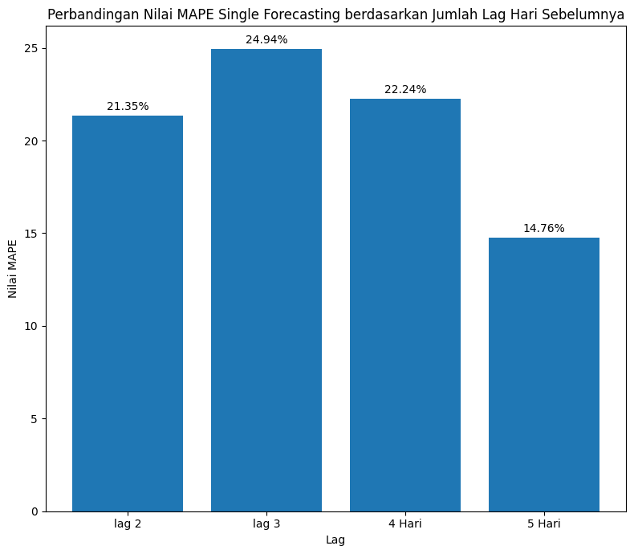